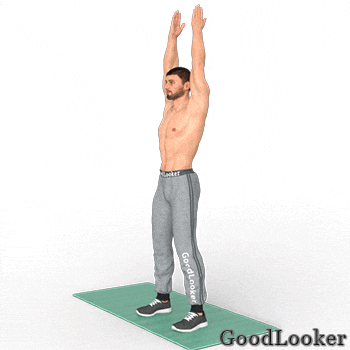
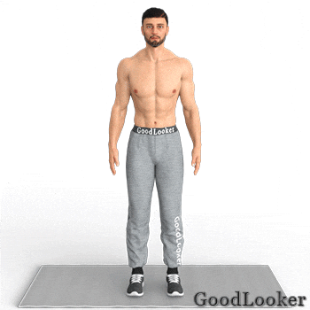
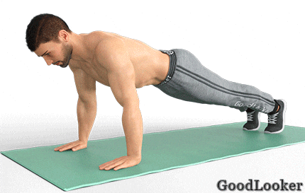
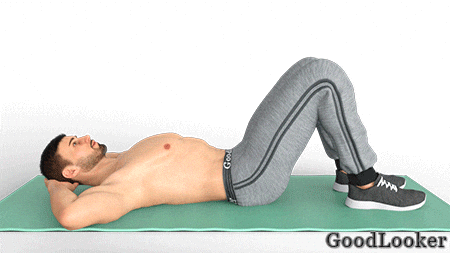
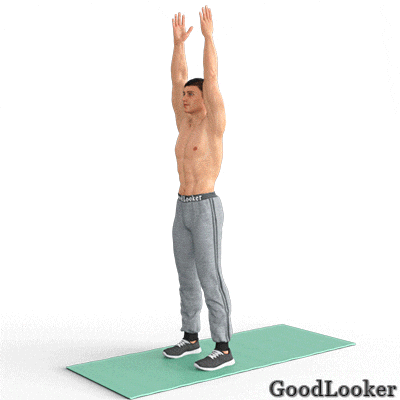
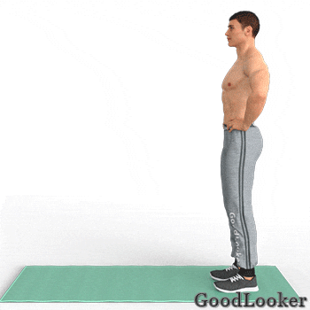
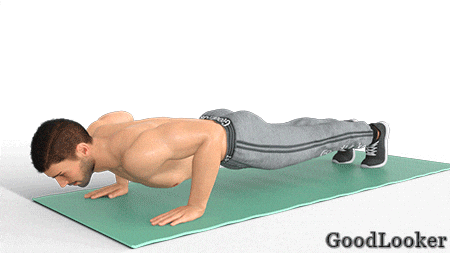
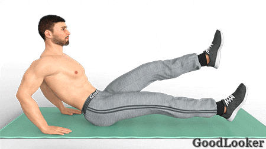

В первый день выполним несложные, но эффективные упражнения, которые станут отличным началом недели. Вас ждут базовые, функциональные и кардио-упражнения без инвентаря для любого уровня подготовки.
Тренируйтесь подходами или по круговой системе на ваш выбор. В случае подходов повторите каждое упражнение по 2-3 подхода и только затем переходите к следующему упражнению. В случае круговой системы выполните все упражнения последовательно по одному подходу и затем повторите все упражнения в 2 или 3 круга. Тренироваться можно по таймеру или считая повторения.
Поставьте ноги на ширине плеч, прямые руки поднимите вверх. Согните ноги в коленях, выполняя приседание до параллели с полом или немного выше. При этом руки опускайте вниз синхронно с движением ног. Вы должны двигаться так, словно находитесь в стартовой позиции перед прыжком в длину. Старайтесь приседать до параллели бедер, чтобы максимально проработать мышцы ног. Упражнение из тренировки для мужчин в домашних условиях укрепляет мышцы нижней части тела, разогревает мышцы и суставы, разгоняет кровь, настраивает на активную работу над собой.
Сколько выполнять: 14-16 приседаний.

Стоя на ширине плеч, опустите руки вниз. Поднимите прямую ногу вверх до параллели с полом и одновременно вытяните противоположную руку вперед, стараясь коснуться ею стопы. Вернитесь обратно, а затем повторите для другой ноги и руки. Еще одно несложное, но эффективное упражнение из программы тренировок для мужчин с собственным весом, которое активно включает в работу мышцы нижней части тела, прорабатывает бицепсы бедер, приводит в тонус мышцы живота, сжигает жировую прослойку на поясе.
Сколько выполнять: 18-20 махов всего.

Встаньте в упор лежа, ноги вместе, руки немного шире плеч, тело вытянуто в одну линию. Согните руки в локтях, словно собираетесь выполнять отжимание от пола. Когда локти достигнут угла 90 градусов, не останавливайтесь, а продолжайте движение вниз, пока не опуститесь животом и грудью на пол. В этой точке замрите и оторвите ладони от пола, поднимая локти вверх. Затем вернитесь в упор лежа и повторите все снова. Простое на первый взгляд упражнение отлично прокачает не только мышцы груди, но и трицепсы рук.
Сколько выполнять: 10-12 отжиманий.

Лягте на спину, положите руки под голову, а ноги согните в коленях. Оторвите от пола голову и лопатки, одновременно поднимая правое колено. Наклонитесь вправо, стараясь левым локтем коснуться поднятого колена. Вернитесь в начальное положение и повторите для другой стороны. Эффективные скручивания прокачают косые мышцы живота, делая ваш пресс не только плоским, но и красиво прорисованным.
Сколько выполнять: 16-20 касаний на обе стороны всего.

Встаньте в упор лежа, тело вытянуто в одну линию, плечи находятся строго над ладонями. Поднимите одну ладонь и коснитесь ею противоположного плеча, затем вернитесь обратно и повторите движение другой рукой. Снова вернитесь в упор лежа, а затем встаньте на ноги, поднимая прямые руки вверх. Снова примите упор лежа и повторите все сначала. Не забудьте чередовать шаги в планке сначала с правой ноги, потом с левой ноги попеременно. Функциональное упражнение из тренировки на все тело для мужчин обеспечит общую нагрузку на все группы мышцы, разгонит кровь и ускорит жиросжигание, а также акцентированно укрепит кор и мышцы пресса.
Сколько выполнять: 10-12 повторений.

Встаньте прямо, ноги на ширине плеч, руки положите на талию. Сделайте широкий шаг вперед, перенося на переднюю ногу вес тела. Согните ноги в коленях, опускаясь в выпад. Вернитесь обратно и повторите другой ногой. Старайтесь выполнять движения от бедер и ягодиц, а не от поясницы, чтобы как следует нагрузить мышцы ног. Базовые выпады вперед укрепят квадрицепсы, бицепсы бедер и ягодицы. Кроме того, дополнительно включатся в работу мышцы пресса.
Сколько выполнять: 18-20 выпадов всего.

Встаньте в упор лежа, ладони расположите под плечами, спину держите ровно. Выполните классическое отжимание от пола, сгибая руки в локтях под углом 90 градусов. На подъеме согните ногу в колене и приведите ее к плечу с внешней стороны корпуса. Верните ногу обратно и повторите отжимание от пола. На следующем подъеме выполните приведение колена с другой стороны. Комплексное упражнение из тренировки на все тело для мужчин прорабатывает крупные мышечные группы верха корпуса, задействует ноги и дополнительно обеспечивает аэробную нагрузку организму.
Сколько выполнять: 10-12 отжиманий.

Лягте на живот, руки лежат вдоль тела, ноги опираются на носки. Немного приподнимите голову и руки – это исходное положение. Теперь максимально поднимите вверх голову, грудь и ноги, опираясь на таз и живот. Спустя пару секунд вернитесь в начальную позицию и снова повторите упражнение. Благодаря сочетанию статики и динамики лодочка нагружает пресс и глубокие мышцы кора, а также задействует широчайшие мышцы спины, поясницу и трапеции, дополнительно укрепляет ягодицы и бицепсы бедер.
Сколько выполнять: 10-12 повторений.
Сядьте на пол, обопритесь на ладони. Спину немного отклоните назад, для этого слегка согните руки в локтях. Прямые ноги поднимите на высоту 45 градусов от пола. Из этого положения выполняйте поочередные махи ногами в небольшой амплитуде. Не опускайте ноги на пол, держите их на весу, напрягая мышцы живота. Упражнение задействует прямую мышцу живота, в частности ее нижнюю часть, обеспечивая вам огненную нагрузку на пресс.
Сколько выполнять: 18-20 разведений ног.

Встаньте в боковую планку на предплечье, свободную руку положите на пояс. Опустите таз вниз, касаясь боковой стороной бедра пола. Затем поднимите корпус и таз вверх, выталкивая тело усилием косых мышц пресса. Не забудьте выполнить упражнение для другой стороны. Упражнения в планке лучше всего прокачивают пресс, а конкретно этот вариант проработает косые мышцы живота, придавая им выразительный рельеф.
Сколько выполнять: 10-12 повторений сначала на одну сторону, потом столько же на другую.